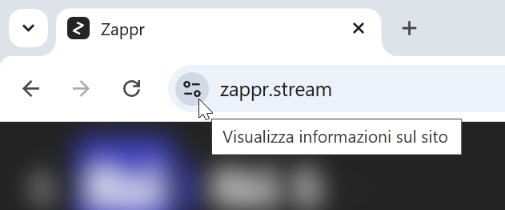
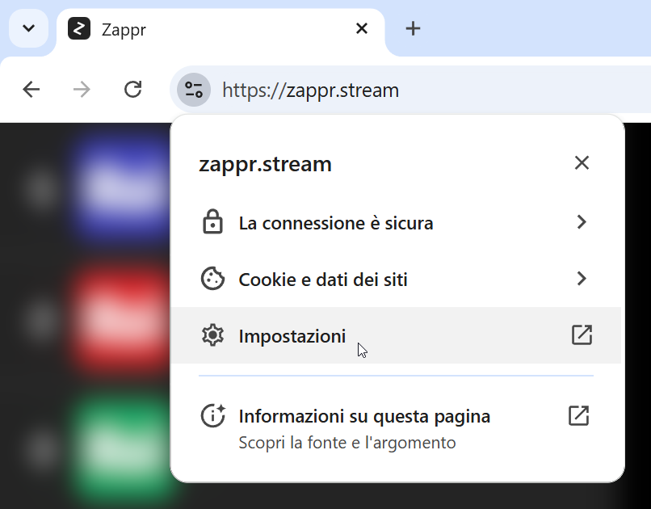
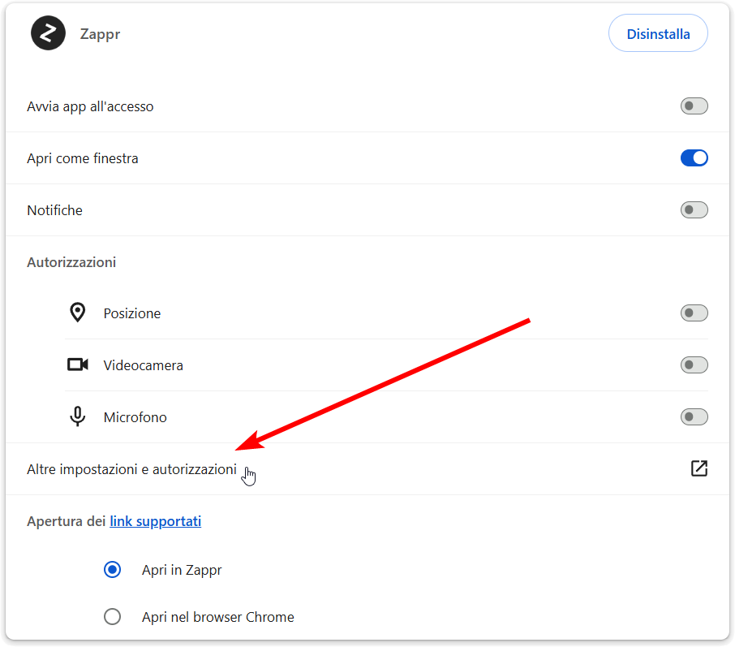
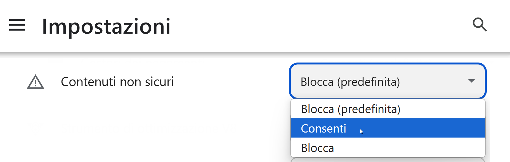
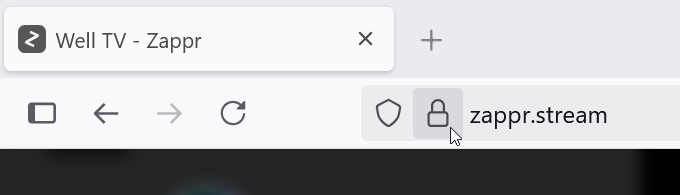
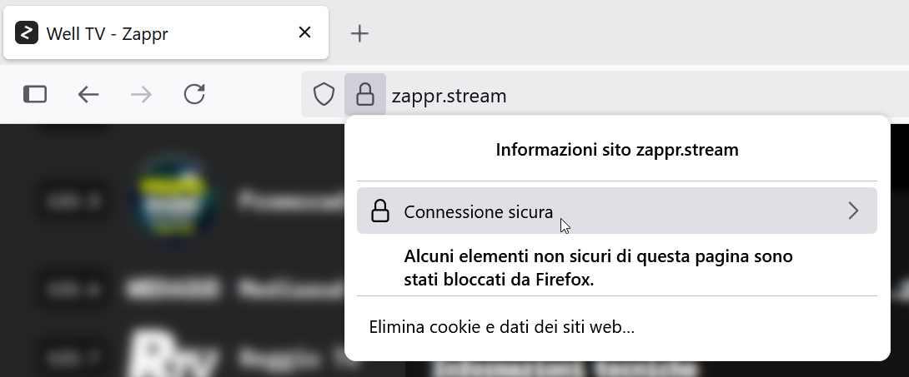
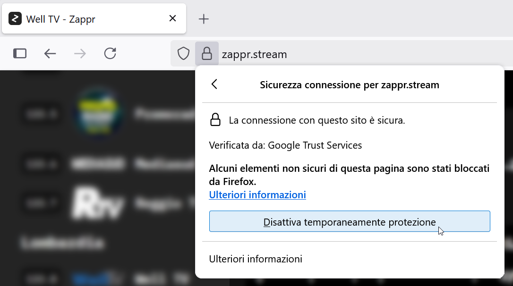

Chrome (o browser derivati, come Opera, Brave, ecc.)
Clicca sull'icona delle impostazioni in alto a sinistra nella barra degli indirizzi.

Nella finestra che compare, clicca su "Impostazioni".

Se poi vedi una schermata come questa, clicca su "Altre impostazioni e autorizzazioni".

Scorri giù fino a trovare "Contenuti non sicuri", poi nel menù a tendina corrispondente seleziona "Consenti".

Firefox
Dopo aver provato a riprodurre un canale HTTP, clicca sull'icona del lucchetto in alto a sinistra nella barra degli indirizzi.

Nella finestra che compare, clicca su "Connessione sicura".

Clicca su "Disattiva temporaneamente protezione".

Mobile
Android
Per vedere i canali HTTP su Android, dovrai accedere a Zappr tramite la versione beta o nightly del browser Firefox. L'impostazione che dovrai cambiare per permettere la visione di questi canali renderà il browser leggermente meno sicuro, quindi se già usi una di queste versioni di Firefox come browser principale ti consigliamo di accedere a Zappr tramite un'altra variante di Firefox.